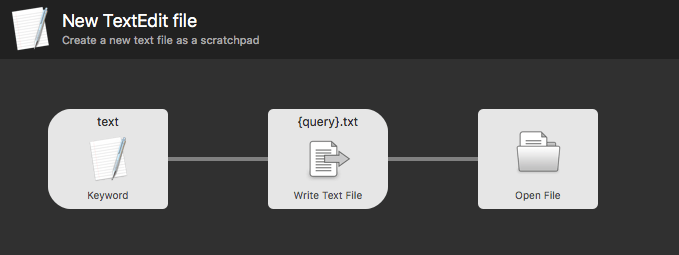
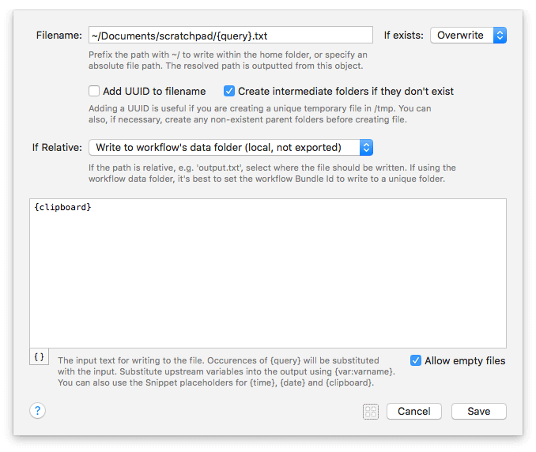
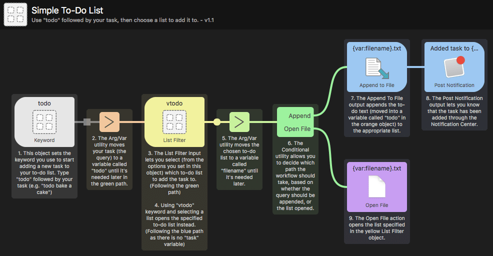

Write File Output
The Write File object is new to Alfred 3, and a convenient way to write to file the output of your workflow. You can create a new file, append text to an existing file or overwrite a file with a new one.

Using the Write File Output
Connect a Write File object to the output of any other object to write the passed-in content to a file.
You can use the {query} from the previous object anywhere in the creation of your new file; As the file name or as the content of the file.

In the example above, I've used the {query} input from the previous Keyword object as the name of the file I'm creating, in order to create a blank file.
You can also include variables to populate either of these fields with values from an earlier stage of your workflow.
The button in the bottom left with curly brackets provides you with examples of date and time, arithmetic and clipboard content. Take a look at the Dynamic Placeholders page to find out more about including dynamic content.
Object Configuration
File creation behaviour
If the file already exists, you can choose from the dropdown to skip, overwrite or append to the existing file.
You can also add a UUID (Universally unique identifier) to the filename, useful when creating unique temporary files in the /tmp folder.
You can opt to create intermediate folders, if the path you specify doesn't already exist. The object doesn't create intermediary folders by default, as these may be dynamically created and with a single mis-spelling, you could be creating a whole folder tree by mistake! However, you can check the box to create intermediate folders for you if needed.
In the bottom right, you can also choose to allow empty files; Depending on the objective of your workflow, you may or may not want empty files to be created.
Choosing Which Folder to Write To
When you set a relative path, this is relative to your workflow itself. Depending on your needs, there are two locations where the workflow data can be saved:
- Write to workflow's data folder: Use this option if the files created by the workflow are intended to be local, and un-synced. These will not be exported with the workflow.
- Write to the workflow folder: Use this option if the files created are intended to be synced, and exported with your workflow.
Workflow Example Using the Write File Object
The Simple To-Do List example workflow, included in Alfred, will show you the Write File object used to create or append a new task to one of three to-do lists.
You'll find it in the Getting Started guides and examples in Alfred, under the [+] button at the bottom of the Workflows sidebar in Alfred's preferences.

Using Dynamic Placeholders
Dynamic Placeholders can include more advanced clipboard and variable substitution, allowing you to include previous clipboard items or upstream workflow variables.
Take a look at the Dynamic Placeholders page for more details.